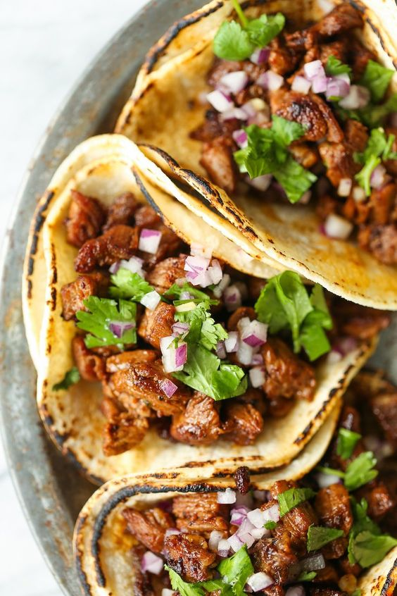

Carne Asada Tacos
Hola Amigos! And today, it's time to indulge in the vibrant flavors
of our Carne Asada Tacos, a culinary journey that brings together the sizzling goodness of perfectly
grilled skirt steak with a harmonious blend of zesty spices.
This recipe promises a savoury and spicy experience, where tender slices of marinated beef meet the freshness
of diced tomatoes, the crispness of white onions, and the kick of our signature four pepper salsa. Elevate
your taco night with these mouthwatering delights, embodying the spirit of authentic Mexican street food.
Prepare to embark on a savory adventure that will leave your taste buds craving more.

Preparation Time: 30 minutes
Cooking Time: 15 minutes
Total Time: 45 minutes
Servings: 4
Difficulty Level: Easy
Ingredients
First, our base ingredients. They may be simple, yes, but today's appetites do not know when to stop.
So no avocado, mushrooms, or bacons. Just these ingredients given below:
- 1 pound skirt steak, thinly sliced
- 2 cloves garlic, minced
- 1 teaspoon cumin
- 1 teaspoon chili powder
- 1 teaspoon smoked paprika
- 1 teaspoon oregano
- Salt and pepper to taste
- Juice of 2 limes
- 2 tablespoons olive oil
- Corn tortillas
- Tomatoes, diced
- White onion, finely chopped
- Four pepper salsa
Method
- In a bowl, combine sliced skirt steak, minced garlic, cumin, chili powder, smoked paprika, oregano,
salt, pepper, lime juice, and olive oil. Mix well to coat the steak evenly.
- Marinate the steak for at least 30 minutes to allow the flavors to meld.
- Preheat a grill or grill pan over medium-high heat.
- Grill the marinated skirt steak for 3-4 minutes per side or until it reaches your preferred level
of doneness.
- Remove the steak from the grill and let it rest for a few minutes before slicing it thinly against
the grain.
- Heat the corn tortillas on the grill or in a dry skillet until warm and pliable.
- Place a few slices of the grilled carne asada on each tortilla.
- Top the carne asada with diced tomatoes, finely chopped white onion, and a spoonful of
four pepper salsa.
- Tuck the tortilla over once and it's ready to serve
And with that, your carne asada tacos is now ready to be consumed. Buen Provecho!